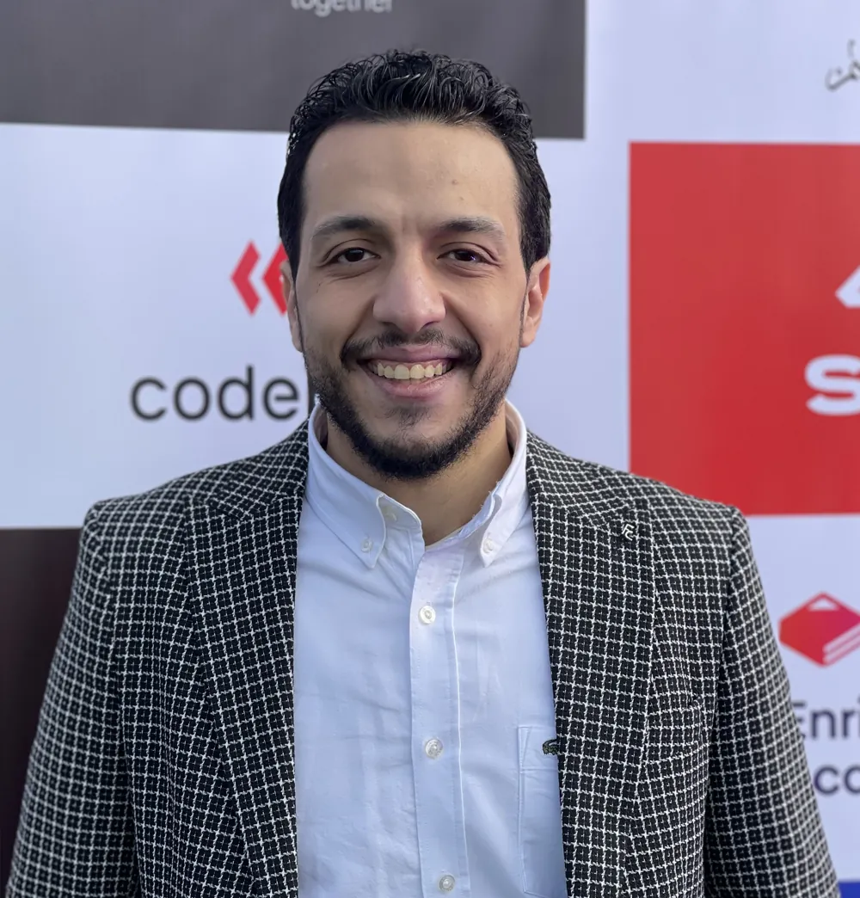

You have an idea, but don’t know where to start.
You see an opportunity, but you’re unsure whether the market is ready, what to build first, or how much to invest. You need a clear way to test the idea before committing your budget.
Co-founder of 7 companies · General Manager & Co-founder of Comma Care
I turn ideas into businesses, and help businesses grow with purpose.
>
I work with founders and business owners to connect the pieces that drive a company forward: its business model, product, marketing, sales, operations and people. Whether you’re starting with an idea or trying to unlock an existing business, the goal is the same: build something customers value, make the numbers work, and create a business that can grow.

You see an opportunity, but you’re unsure whether the market is ready, what to build first, or how much to invest. You need a clear way to test the idea before committing your budget.
Your app or website is live, but sales are below expectations. The issue may not be the product itself. It could be positioning, pricing, marketing, or the way your sales process works.
Every decision comes back to you. Problems wait for your attention, responsibilities are unclear, and daily operations leave little room to focus on the bigger picture.
Revenue is coming in, but costs keep eating into it. You need a clearer view of margins, acquisition costs and operational performance before you can scale confidently.
These are business challenges, not just technology challenges. Solving them takes a connected view of strategy, marketing, sales, operations and technology.
Most requested
For founders with an idea or an early-stage business.
We start by understanding the opportunity before committing to development. Then we create a practical plan to build, launch and validate the business.
For business owners who want stronger sales and better profitability.
Starting over isn’t always the answer. We assess what you already have, identify what’s working and what isn’t, and focus on the improvements that matter most.
For business owners facing a key decision or a growth challenge.
A focused working session to understand your situation, examine the challenges and identify practical next steps.
For companies, founders and investors exploring a shared opportunity.
I’m interested in collaborations built on complementary strengths, clear responsibilities and meaningful value for everyone involved.
A connected approach to building and growing businesses.
Market and customer research, positioning, business model design, pricing, cost structure, and the numbers behind a profitable business.
A clear brand, relevant messaging, content, and campaigns designed to attract the right customers and deliver measurable outcomes, not just engagement.
Customer journeys, sales processes, lead follow-up, acquisition channels, partnerships and B2B opportunities that support sustainable revenue growth.
Practical digital products built around business needs, from apps and websites to platforms, systems and dashboards, with a focus on priorities, user experience and scalability.
Clear roles, responsibilities, internal processes and management systems that help the business run without every decision depending on the founder.
Performance reviews, growth opportunities, new markets, branches and services, supported by the operational capacity and financial discipline to sustain them.
Every business starts from a different place. We first identify your current stage, then focus on the next move that can make the biggest difference.
Define the problem, understand who experiences it, and find out whether customers are willing to pay for a solution. Assess the market and competition before committing significant resources.
Clarify how the business will make money: revenue streams, pricing, expected costs, margins, and the sales volume needed to reach break-even and profitability.
Prioritize the essential features and build an initial version that can be tested with real users. Focus on learning from the market instead of spending time on features customers may not need.
Create a marketing and sales plan that fits the product and audience. Define the channels, messaging, budget and metrics, then improve performance based on results.
Clarify responsibilities, establish repeatable processes and introduce management routines, so the business can operate without the founder handling every detail.
Review revenue, costs and margins. Identify opportunities to improve performance, then explore expansion into new products, services or markets based on evidence.
You don’t necessarily need to start over. We begin with your current business and identify what needs attention: product, marketing, sales, operations, or the business model.
Build right. Turn a profit. Then scale.
Book a ConsultationI’m Mohamed Lotfy, a co-founder and business leader with a technology background.
I started my career in software engineering in 2013. Over time, my work expanded from building digital products and leading technology teams to managing businesses and co-founding companies across different industries. That journey shaped how I approach business: technology matters, but it must serve a real market need.
Today, I’m involved in building and managing businesses across technology, services and commerce. I also work with founders and business owners to evaluate opportunities, improve existing ventures, and build the systems they need to operate and grow.
I believe success is not simply launching an app or opening a business. It’s creating something customers value, building a model that makes financial sense, and developing a team and operating system that can sustain growth.
A software and digital solutions company that helps businesses turn their needs into practical, scalable technology products and systems.
A technology platform for managing bookings and services, helping service providers organize their operations and improve the customer experience.
A brand in the cosmetics industry.
Working with founders and business owners on business models, performance improvement, and selecting technology that supports business goals.
My perspective comes from being involved in the real work of building and running companies, from market decisions and operations to hiring, marketing and technology.
My background spans software engineering, team leadership, management and business development. I connect business needs with the right technical decisions, without treating technology as the end goal.
I collaborate with multidisciplinary teams and specialists, helping turn plans into real work rather than leaving them as recommendations.
My work is focused mainly on Saudi Arabia and Egypt, with projects and opportunities in other markets, including the UAE and Kuwait.

I enjoy sharing practical experience with people interested in technology and digital products, especially students and developers at the beginning of their careers.

An introduction to iOS development: getting started, essential skills, career opportunities, and the journey from building an app to publishing it.
No. I work with businesses across different sectors, including commerce, services, care, beauty and more. Technology is one of the tools we use. The focus is on building a business with a clear model and meaningful results.
Not at all. This is often the best time to start. We can assess the market, understand customer needs, and test the opportunity before investing heavily in development.
Not necessarily. We review your current business, identify what is working and what needs improvement, then build a plan around the real priorities. The answer may be better marketing, sales, operations or profitability, not rebuilding the product.
A consultation focuses on a specific question or challenge and ends with an assessment and actionable recommendations. A partnership is a longer-term collaboration to build and grow a business, with clearly agreed roles and responsibilities.
Yes. I work with multidisciplinary teams and specialists across technology, marketing, operations and other fields. The right team is determined by each project’s needs and agreed scope.
My main focus is Saudi Arabia and Egypt, alongside projects and opportunities in other markets, including the UAE and Kuwait.
I review your request and get in touch by phone or email to arrange an initial conversation and understand what you need.
Let’s talk
Whether you’re at the idea stage or leading an established company looking for its next stage of growth, I’d be glad to learn about your business and explore where we can make a difference.
When you reach out: